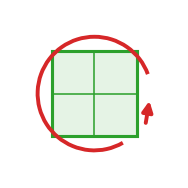

grid
A pure-state continuum: a C-channel scalar grid, NO behaviour.

field frame: grid
A pure-state continuum: a C-channel scalar grid, NO behaviour.
Role in Plexus
- Frame —
grid(how the continuum is discretized). - Couples to — any set, via an
exchangeoperator. - Used by —
exchangeoperators (scatter / gather) andfieldself-dynamics.
Description
A field is what it is (a discretized scalar density over the domain), not what is done to it. All dynamics – deposit (set->field), diffuse/decay (field->field), and sense (field->set) – are OPERATORS in the schedule, never methods here. The field only holds its grid and the geometry of its discretization (the world<->pixel map), so every field-coupled model (slime, reaction-diffusion, morphogen) reuses it.
One channel per coupling target: the slime case uses one channel per species (per type of the coupled set), so categorical separation needs no new field code.
Dimension-generic (the dimension contract): a dim selects a 2D grid [C, nx, ny] or a 3D grid [C, nx, ny, nz]; the world<->pixel map (pix) and the field operators (deposit / diffuse) are written N-D so the same field serves 2D and 3D slime.
Source
src/plexus/operators/scalar_field.py
"""ScalarField -- a pure-state continuum: a C-channel scalar grid, NO behaviour.
A field is *what it is* (a discretized scalar density over the domain), not what is
done to it. All dynamics -- deposit (set->field), diffuse/decay (field->field), and
sense (field->set) -- are OPERATORS in the schedule, never methods here. The field
only holds its grid and the geometry of its discretization (the world<->pixel map),
so every field-coupled model (slime, reaction-diffusion, morphogen) reuses it.
One channel per coupling target: the slime case uses one channel per species (per
`type` of the coupled set), so categorical separation needs no new field code.
Dimension-generic (the dimension contract): a `dim` selects a 2D grid `[C, nx, ny]`
or a 3D grid `[C, nx, ny, nz]`; the world<->pixel map (`pix`) and the field operators
(deposit / diffuse) are written N-D so the same field serves 2D and 3D slime.
"""
from __future__ import annotations
import torch
from plexus.models.base import Field
from plexus.models.registry import register_field
@register_field("grid", frame="grid")
class ScalarField(Field):
"""A C-channel scalar field on a square-pixel grid over the box [0,W]x[0,1](x[0,1]).
Pure state: a `grid` buffer `[C, *shape]` (shape = (nx, ny) in 2D, (nx, ny, nz) in
3D) plus the geometry to map a world position to a voxel (`pix`). Pixels are
square, dx = 1/R; axis 0 spans the world width W, the other axes span 1. Operators
read/write `grid` directly.
"""
def __init__(self, name, couples_to=None, components=1, res=200, width=1.0, dim=2, device="cpu"):
super().__init__(name, couples_to)
self.C = int(components)
self.R = int(res)
self.width = float(width)
self.dim = int(dim)
self.nx = int(round(self.width * self.R)) # square pixels, dx = 1/R
self.ny = self.R
if self.dim == 2:
self.shape = (self.nx, self.ny)
else: # 3D: axes 1,2 span [0,1]
self.nz = self.R
self.shape = (self.nx, self.ny, self.nz)
self.register_buffer("grid", torch.zeros((self.C,) + self.shape, device=device))
def pix(self, *coords):
"""Nearest voxel indices of world positions (per-axis int-cast of the shader).
Accepts D coordinate tensors (x, y[, z]) and returns a D-tuple of index
tensors. Axis 0 spans [0, W], every other axis spans [0, 1]; each maps by the
common pixels-per-unit R. The 2D call `pix(x, y)` returns `(gx, gy)` exactly as
before (back-compatible)."""
out = []
for k, c in enumerate(coords):
box = self.width if k == 0 else 1.0
out.append((c.clamp(0, box - 1e-6) * self.R).long().clamp(0, self.shape[k] - 1))
return tuple(out)